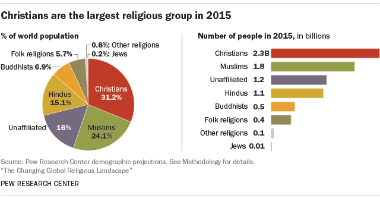

Udeo religija u populaciji
Hrišćanstvo je bilo najveća religijska grupa na svetu po istraživanju sprovedenom 2015. godine, čineći skoro trećinu (31%) svetske populacije.
Istraživanja takođe pokazuju da taj procenat opada pogotovo u Evropi. Glavne svetske religije i duhovne tradicije i običaji se mogu podeliti u veliki broj grupa, ali glavne grupe su...

Najveće religijeske grupe:
| Relgija | Procenat zastupljenosti |
|---|---|
| Hrišćanstvo | 31.5% |
| Islam | 23.2% |
| Nereligiozni | 16.3% |
| Hinduizam | 15.0% |
| Budizam | 7.1% |
| Folklorne religije | Ukupno 6.9% |
| Ostale religije |